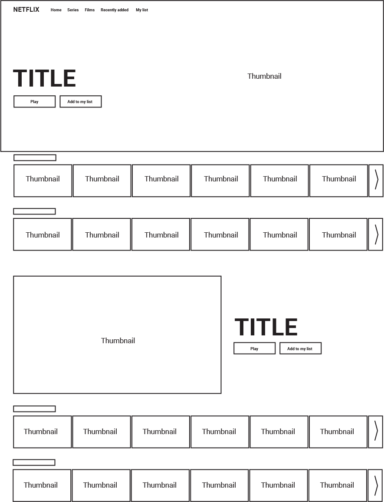

L'extension Prime-Space pour Google Chrome fait partie d'une expérience menée par des chercheurs de Paris 1 visant à identifier les mécanismes qui favorisent ou mettent en danger la visibilité des contenus sur Netflix. L'objectif général est d'évaluer le poids économique de la mise en avant dans le secteur audiovisuel délinéarisé. Les heures de "prime-time" à la télévision linéaire sont connues, étiquetées comme telles et même, dans certains pays, régulées. Cependant, les services à la demande doivent également faire face à la question de la mise en avant, mais pas tant dans le temps que dans l'espace. On peut alors considérer que l'équivalent du “prime-time” à la télévision est le "prime-space" pour les services comme Netflix.
En installant ce plugin sur votre navigateur Chrome, vous nous aiderez à comprendre comment le comportement d'un utilisateur influence les types de contenus qui sont mis en avant sur sa page d'accueil Netflix.
L'extension Prime-Space collectera le contenu de chaque vignette qui apparaît sur votre page d'accueil Netflix. Chaque vignette contient un identifiant de contenu unique qui nous permet d'en savoir plus sur le titre qui y est proposé.
De plus, chaque vignette est placée dans une zone spécifique de la page d'accueil. Par exemple, "Fast and the Furious" peut apparaître dans la 5ème vignette sur la 2ème ligne de votre page d'accueil, et sa position peut changer en fonction de ce que vous décidez de regarder par la suite.
L'extension Prime-Space collecte, sans que vous ayez à intervenir, toutes les vignettes et leur position telles qu'elles apparaissent sur votre écran, ainsi que les vignettes sur lesquelles vous avez cliqué.
Nous sommes en parfaite conformité avec le RGPD.
Toutes les données collectées sont totalement anonymisées et nous n'avons aucun moyen d'identifier la personne qui se cache derrière chaque profil. Dès que l'extension est installée sur votre navigateur, votre identifiant est généré de manière aléatoire. Nous n'avons accès ni à vos informations personnelles, ni à vos identifiants Netflix.
Vous pouvez même vérifier les données que nous avons recueillies auprès de vous en cliquant sur le bouton "Access your data" dans le menu de l'extension.
Les données que nous recueillons sont uniquement destinées à des fins de recherche. Nous ne ferons aucune tentative de vendre vos données ou de les transférer à une tierce partie.
Si vous souhaitez la suppression de vos données, vous pouvez nous envoyer un courriel à nicolas.herbaut[at]univ-paris1.fr
Nous pensons qu’il est nécessaire, afin de bien comprendre les mécanismes de mise en avant dans un environnement régi par des algorithmes, d’examiner les différentes interactions entre les utilisateurs et le fournisseur de contenu. Cette extension est un élément clé de notre projet de recherche, car elle nous permet d'examiner des données réelles à la fois sur les habitudes de consommation des utilisateurs et sur le fonctionnement de la plateforme Netflix.
En utilisant les données recueillies grâce à l'extension Prime-Space, nous espérons publier nos résultats dans des revues universitaires de renom, et ce dans plusieurs domaines : économie, marketing et informatique.
Dès que nous aurons suffisamment de données pour effectuer des analyses significatives, nous mettrons l’extension hors-service, ce qui signifie qu'elle ne fonctionnera plus, même si elle est toujours installée sur votre navigateur.
N'hésitez pas à partager ce plugin avec vos amis, collègues et famille. Plus on est, le mieux c’est !
- Pour installer, il suffit de suivre ce lien.
- Une fois sur le site Chrome WebStore, cliquez sur "Add Extension".
- Votre navigateur vous demandera si vous souhaitez autoriser notre extension à collecter des données sur le site web de Netflix.
- Une fois que vous aurez cliqué sur "Autoriser", vous serez redirigé vers une page vous demandant si vous consentez à nos méthodes de collecte de données.
- Cochez les cases et c’est bon !
L'extension Prime-Space rassemble le contenu de toutes les vignettes ainsi que le contenu du "panneau d'affichage" supérieur et de la grande bannière.
Joëlle Farchy
Professeur, Économiste
Maître de conférences, Computer Science
nicolas.herbaut[at]univ-paris1.fr
Chercheur junior, Économie
stallec[at]emns.fr
Chercheur junior, Économie
gbideau[at]emns.fr
Sylvain Vocale
Développeur, Computer Science